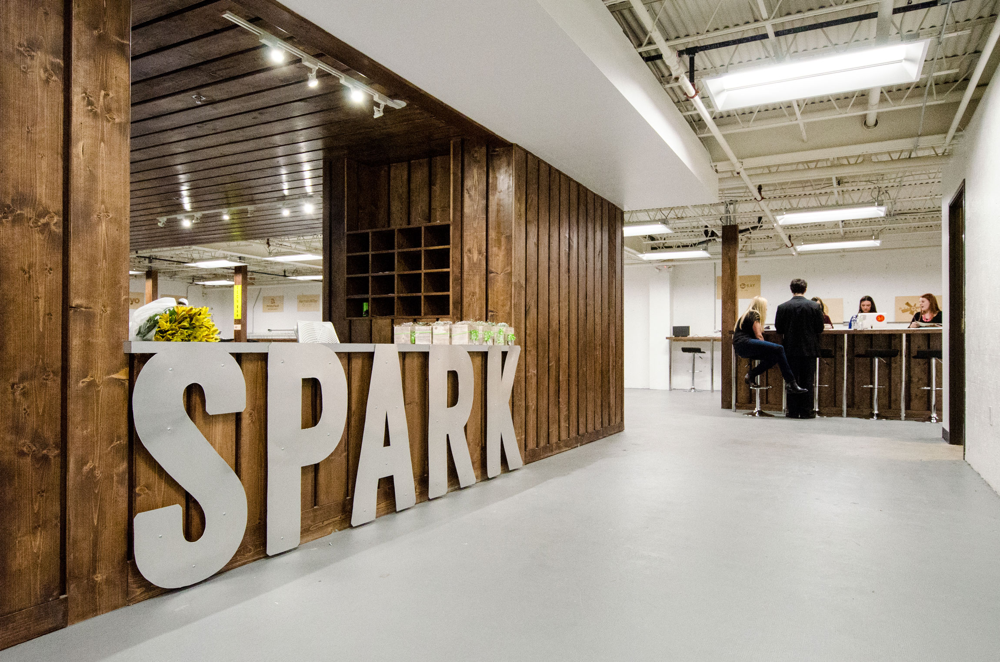
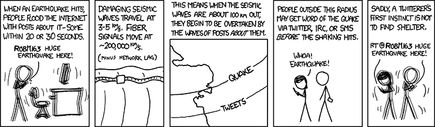
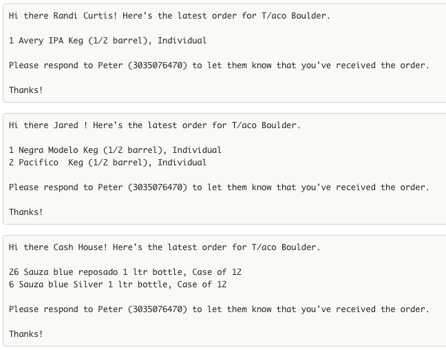

<html lang="en"><head><meta charset="utf-8"/><link href="https://cdnjs.cloudflare.com/ajax/libs/prism/1.5.1/themes/prism.css" rel="stylesheet"/><link href="https://fonts.googleapis.com/css?family=EB+Garamond|Montserrat" rel="stylesheet"/><link rel="stylesheet" href="/style.css"/><base target="_blank"/></head></html><body><div><section class="slide"><h1 id="fireside-chat-with-ken-hoff">Fireside chat with Ken Hoff</h1>
<p>CU Boulder, CSCI 1000</p>
<p>2016-08-29</p>
</section><section class="slide">
<h1 id="hi-there-i-m-ken-">Hi there! I&#39;m Ken.</h1>
<p>I&#39;m a web developer based out of Boulder.</p>
<p>More about me at <a href="https://hoff.tech/">hoff.tech</a>.</p>
<p>Show of hands - BS/BA/open option/other</p>
</section><section class="slide">
<h1 id="how-to-be-a-web-developer">How to be a web developer</h1>
<ul>
<li>Look stuff up on the internet</li>
<li>Make stuff</li>
<li>Repeat</li>
</ul>
<p></p>
</section><section class="slide">
<h1 id="today-on-ken-s-fireside-chat-">Today, on Ken&#39;s fireside chat:</h1>
<p></p>
<p>Obligatory Spark Classes pitch (sorry, gotta do it!)</p>
<p>What I used to do (CU, Microsoft)</p>
<p>What I&#39;m doing now (consulting, Barfly)</p>
<p>Some freestyle web development (if ya wants)</p>
</section><section class="slide">
<h1 id="spark-classes">Spark Classes</h1>
<p></p>
<p><a href="http://sparkboulder.com/">Spark Boulder</a> is an entrepreneurial student co-working space on the Hill! It was founded a couple years back by my buddy <a href="https://www.linkedin.com/in/fletchrichman">Fletcher</a>.</p>
<p>I&#39;m teaching <strong>Front End Web Dev</strong> and <strong>Back End Web Dev</strong> at Spark Boulder in the Fall!</p>
<p>Apply at <a href="http://sparkboulder.com/sparkclasses/">http://sparkboulder.com/sparkclasses/</a> or email my buddy <strong>Danny Walsh</strong> (<a href="&#x6d;&#x61;&#105;&#108;&#116;&#111;&#58;&#x64;&#97;&#x6e;&#x6e;&#x79;&#x40;&#x73;&#112;&#97;&#114;&#x6b;&#x62;&#111;&#117;&#x6c;&#100;&#101;&#x72;&#x2e;&#99;&#x6f;&#109;">&#x64;&#97;&#x6e;&#x6e;&#x79;&#x40;&#x73;&#112;&#97;&#114;&#x6b;&#x62;&#111;&#117;&#x6c;&#100;&#101;&#x72;&#x2e;&#99;&#x6f;&#109;</a>) - he runs all the operations stuff for Spark. Or, you can leave your name on the sheet up here and he&#39;ll get in touch with you.</p>
<h2 id="the-deets">The deets</h2>
<p>Classes start <strong>October 3rd</strong></p>
<p>2x a week for 10 weeks</p>
<p>Evening classes - works with a full-time student schedule</p>
<p>Integrated project-based assignments</p>
<p>Taught by industry professionals</p>
<p>$999 per semester</p>
<h2 id="front-end-web-dev">Front End Web Dev</h2>
<p>Portfolio sites, sites for local businesses, and client-side web apps</p>
<p>HTML, CSS, JavaScript, and jQuery</p>
<p>Great for students who have never programmed before!</p>
<h2 id="back-end-web-dev">Back End Web Dev</h2>
<p>Create APIs, connect to databases, and handle authentication/payments</p>
<p>Node.js, Postgres, Modulus, plus some other libraries</p>
<p>Prereq: 6+ months of a <em>programming</em> language (not markup), or you&#39;ve completed CSCI 1300.</p>
</section><section class="slide">
<h1 id="what-i-used-to-do">What I used to do</h1>
<h2 id="internships">Internships</h2>
<p>USGS - detecting earthquakes with twitter - <a href="https://pubs.er.usgs.gov/publication/70006356">usgs paper</a> - <a href="http://xkcd.com/723/">xkcd comic</a></p>
<p></p>
<p>lijit (now <a href="https://www.sovrn.com/">sovrn</a>) - general development</p>
<p><a href="https://www.rallydev.com/">Rally Software</a> (now CA Technologies) - &quot;intrapreneurial projects&quot;</p>
<h2 id="cu-boulder">CU Boulder</h2>
<p>Graduated December 2013</p>
<p>Bachelor&#39;s of Science of Computer Science (HCC Track)</p>
<p>Senior Thesis: <a href="https://github.com/kenhoff/thesis/blob/master/KenHoffThesis.pdf">Improving Educational Game Design Methods</a></p>
<p>Favorite class? Startup Essentials for Software Engineering (CSCI 4830?)</p>
<p><em>(might have been replaced by Entrepreneurial Capstone now)</em></p>
<h2 id="microsoft">Microsoft</h2>
<p>Started working for Microsoft <strong>July 2014</strong> in Seattle, WA</p>
<p>I was a &quot;Program Manager&quot; - Microsoft&#39;s version of a &quot;Product Manager&quot; (different than a &quot;<a href="http://www.huffingtonpost.com/brian-de-haaff/the-product-manager-vs-pr_b_8040402.html">Project Manager</a>&quot;)</p>
<p></p>
<blockquote>
<p>Well-well look. I already told you: I deal with the god damn customers so the engineers don&#39;t have to. I have people skills; I am good at dealing with people. Can&#39;t you understand that? What the hell is wrong with you people?</p>
</blockquote>
<p>Worked on <strong><a href="https://azure.microsoft.com/en-us/documentation/articles/active-directory-whatis/">Azure Active Directory</a></strong> - on a tiny little feature called &quot;Reporting&quot;</p>
<p>Left <strong>December 2015</strong>, moved back to Boulder to work on consulting and side projects</p>
<p>Best part of Microsoft? The <a href="http://blogs.microsoft.com/jobs/story-library/oneweek-hackathon-shows-culture-shift-at-microsoft/">hackathon</a> - 2 days of working on whatever we wanted to work on</p>
</section><section class="slide">
<h1 id="what-i-m-doing-now">What I&#39;m doing now</h1>
<h2 id="consulting">Consulting</h2>
<p>Independent, freelance, contract, consulting, whatever you want to call it</p>
<p>I build web apps, frontends, APIs, and bots for people and companies.</p>
<p>More about me and my consulting work at <a href="https://hoff.tech/">hoff.tech</a>.</p>
<p>I work out of an office in Spark. Come say hi sometime!</p>
<h2 id="barfly">Barfly</h2>
<p>I&#39;ve got a side project that helps bars order liquor every week.</p>
<p>Bars have to order liquor in bulk from <strong>distributors</strong>. The problem is, each distributor carries different liquors, so bars have to put together 6-12 different distributor orders <strong>every week</strong>. On top of that, they have to order through <strong>sales reps</strong>, which usually only take text messages.</p>
<p>I built a web app to help with the process. Bar owners just see a list of all of their liquors, punch in what they need, and then we automatically send text messages to all of their sales reps.</p>
<p></p>
<p>I work with my buddy Peter, who runs <a href="http://tacocolorado.com/">T/Aco</a> downtown on Walnut.</p>
<h2 id="spark-classes">Spark Classes</h2>
<p>I&#39;m teaching classes out of Spark, but you already heard about that!</p>
<p>One fun part is <code>@classbot</code>, a Slack bot that I built to replace my TA in the class!</p>
<p>To submit a web site that you built for an assignment, you first deploy your site to the internet, then send <code>@classbot</code> the URL to your site.</p>
<p>Then, <code>@classbot</code> goes to your site and <em>automatically</em> grades it - you get a grade <strong>instantly</strong>, and you can submit assignments as many times as you want, whenever you want.</p>
<p>@classbot is <a href="https://github.com/kenhoff/classbot">open source on GitHub</a>.</p>
</section><section class="slide">
<h1 id="i-m-a-web-developer-">I&#39;m a web developer!</h1>
<p>what does a web developer do?</p>
<p>Web developers is a pretty umbrella term, but I make <strong>full-stack web apps</strong>.</p>
<p>Examples of full-stack web apps are Facebook, Twitter, Instagram, almost everything consumer-facing at Google, etc</p>
<h2 id="facebook-for-dogs">Facebook for Dogs</h2>
<p>For example, if you asked me to make <strong>Facebook for Dogs</strong>, that would be a full-stack web app.</p>
<p>You&#39;d need to be able to go to <a href="http://facebookfordogs.com/">http://facebookfordogs.com/</a>, sign up (add some personal information), find and follow other Facebook for Dogs ™ users, see their posts, and create your own post. Maybe you&#39;d like email notifications, or to be able to pay for a premium account.</p>
<p>Apps aren&#39;t cheap! To get an idea of how much it would take to build your app, check out <a href="https://estimatemyapp.com/">estimatemyapp.com</a>.</p>
</section><section class="slide">
<h1 id="web-dev-freestyling">Web dev freestyling</h1>
<p></p>
</section><section class="slide">
<h1 id="you-too-can-be-a-web-developer-">You too can be a web developer!</h1>
<p>Let&#39;s make a simple landing page for your portfolio.</p>
<p><em>(you can also do this later, the slides will always be available at this URL)</em></p>
<p>You will need a <strong>text editor</strong> (Not Microsoft Word or Pages - use Notepad on Windows, or TextEdit on the Mac)</p>
<p>I use <a href="https://atom.io/">Atom</a>! It&#39;s pretty friggin cool.</p>
<p>First, bust open that text editor, and create a new file <code>index.html</code> (note the extension! no <code>.txt</code> or <code>.rtf</code> here), and save it.</p>
<p>Then, put the following contents into your <code>index.html</code> file and save it:</p>
<pre><code class="lang-html">&lt;h1&gt;Yournamehere&#39;s Portfolio Site&lt;/h1&gt;
</code></pre>
<p>Then, find your <code>index.html</code>, and double-click it to open it in your browser!</p>
<p>(you can also do <code>ctrl-O</code> or <code>⌘-O</code> from your browser)</p>
</section><section class="slide">
<h1 id="-">ｙｏｕ ａｒｅ ｎｏｗ ａ ｗｅｂ ｄｅｖｅｌｏｐｅｒ</h1>
<p></p>
</section><section class="slide">
<h1 id="moar-web-dev">MOAR WEB DEV</h1>
<p>For the next part of your portfolio&#39;s landing page, you&#39;ll need your favorite image from <a href="https://unsplash.com/">unsplash.com</a>.</p>
<p>I like <a href="https://unsplash.com/?photo=NDuPLKYRXQU">mountains</a>!</p>
<p>Download and save your file (upper right button) <strong>in the same folder as your <code>index.html</code></strong>, and name it something like <code>mountains.jpeg</code>.</p>
<p>Replace the contents of your <code>index.html</code> file with the following:</p>
<pre><code class="lang-html">&lt;html&gt;
    &lt;head&gt;
        &lt;link href=&quot;https://fonts.googleapis.com/css?family=Raleway:300,400,700&quot; rel=&quot;stylesheet&quot;&gt;
        &lt;style&gt;
            body {
                margin: 0;
                font-family: &#39;Raleway&#39;, sans-serif;
            }

            header {
                display: flex;
                justify-content: center;
                align-items: center;
                flex-direction: column;
                height: 100vh;
                background-image: url(&quot;mountains.jpeg&quot;);
                background-position: center;
                background-size: cover;
            }
        &lt;/style&gt;
    &lt;/head&gt;
    &lt;body&gt;
        &lt;header&gt;
            &lt;h1&gt;ken really loves mountains&lt;/h1&gt;
            &lt;p&gt;
                Mathematical!
            &lt;/p&gt;
        &lt;/header&gt;
    &lt;/body&gt;
&lt;/html&gt;
</code></pre>
</section><section class="slide">
<h1 id="even-moar-web-devs">EVEN MOAR WEB DEVS</h1>
<p>break it down now</p>
<pre><code class="lang-html">&lt;html&gt;
    &lt;head&gt;
        &lt;link href=&quot;https://fonts.googleapis.com/css?family=EB+Garamond|Montserrat:700|Raleway:300,400,700&quot; rel=&quot;stylesheet&quot;&gt;
        &lt;link href=&quot;https://maxcdn.bootstrapcdn.com/font-awesome/4.6.3/css/font-awesome.min.css&quot; rel=&quot;stylesheet&quot; crossorigin=&quot;anonymous&quot;&gt;
        &lt;style&gt;
            body {
                margin: 0;
                font-family: &#39;Raleway&#39;, sans-serif;
            }

            header {
                display: flex;
                justify-content: center;
                align-items: center;
                flex-direction: column;
                height: 100vh;
                background-image: linear-gradient(rgba(255, 255, 255, 0.5), rgba(255, 255, 255, 0.5)), url(&quot;mountains.jpeg&quot;);
                background-position: center;
                background-size: cover;
            }

            section {
                display: flex;
                flex-direction: row;
                flex-wrap: nowrap;
                align-items: center;
                justify-content: space-around;
                height: 100vh;
            }

            section&gt; div {
                box-sizing: border-box;
                padding: 5em;
                max-width: 50%;
            }

            img {
                display: block;
                max-width: 100%;
                height: auto;
            }

            footer {
                height: 50px;
                display: flex;
                justify-content: space-around;
                align-items: center;
                flex-direction: row;
                flex-wrap: nowrap;
                font-family: &#39;EB Garamond&#39;, serif;
            }

            .logo {
                font-weight: bold;
                font-family: &#39;Montserrat&#39;, sans-serif;
                text-transform: uppercase;
            }
            a, a:active, a:visited, a:focus, a:hover {
                color: inherit;
                text-decoration: none;
            }
        &lt;/style&gt;
    &lt;/head&gt;

    &lt;body&gt;
        &lt;header&gt;
            &lt;h1&gt;ken really loves mountains&lt;/h1&gt;
            &lt;p&gt;
                Mathematical!
            &lt;/p&gt;
        &lt;/header&gt;
        &lt;main&gt;
            &lt;section&gt;
                &lt;div&gt;
                    &lt;img src=&quot;ken.jpg&quot; /&gt;
                &lt;/div&gt;
                &lt;div&gt;
                    &lt;p&gt;
                        Ken is a cranky old townie who used to work for Microsoft.
                    &lt;/p&gt;
                    &lt;p&gt;
                        Ken codes poorly for a living to pay for pizza. He lives in Boulder with his cat and video games.
                    &lt;/p&gt;
                    &lt;p&gt;
                        Algebraic!
                    &lt;/p&gt;
                &lt;/div&gt;
            &lt;/section&gt;
        &lt;/main&gt;
        &lt;footer&gt;
            &lt;div&gt;
                &lt;i class=&quot;fa fa-code&quot;&gt;&lt;/i&gt; by &lt;span class=&quot;logo&quot;&gt;&lt;a href=&quot;https://hoff.tech&quot; target=&quot;_blank&quot;&gt;Hofftech&lt;/a&gt;&lt;/span&gt;
            &lt;/div&gt;
            &lt;div&gt;Rhombus!&lt;/div&gt;
        &lt;/footer&gt;
    &lt;/body&gt;
&lt;/html&gt;
</code></pre>
<p>need some pretty simple hosting? check out <a href="http://www.site44.com/">site44</a></p>
</section><section class="slide">
<h1 id="when-you-realize-that-web-development-is-your-life-forever-">When you realize that web development is your life, forever:</h1>
<p></p>
</section><section class="slide">
<h1 id="what-questions-are-there-">What questions are there?</h1>
<p></p>
</section><section class="slide">
<h1 id="obligatory-hofftech-pitch">Obligatory Hofftech Pitch</h1>
<p>Need a web app built, or know someone who does? Get in touch! <a href="&#109;&#x61;&#105;&#108;&#116;&#111;&#x3a;&#x6b;&#101;&#110;&#64;&#x68;&#111;&#102;&#102;&#x2e;&#116;&#x65;&#x63;&#x68;">&#x6b;&#101;&#110;&#64;&#x68;&#111;&#102;&#102;&#x2e;&#116;&#x65;&#x63;&#x68;</a></p>
</section><section class="slide">
<h1 id="how-to-be-a-web-developer">How to be a web developer</h1>
<ul>
<li>Look stuff up on the internet</li>
<li>Make stuff</li>
<li>Repeat</li>
</ul>
<p></p>
</section><section class="slide">
<h1 id="excelsior-">Excelsior! 🚀</h1>
<p>Hit me up about anything! If you have more questions about life after CU, web dev, interviewing, Microsoft, if you need me to look at your code, or even if you just want to get coffee. Totally down to help out students however I can.</p>
<h2 id="-mailto-ken-hoff-tech-"><a href="&#109;&#97;&#x69;&#x6c;&#x74;&#111;&#x3a;&#x6b;&#101;&#x6e;&#64;&#x68;&#111;&#x66;&#x66;&#46;&#116;&#101;&#99;&#104;">&#x6b;&#101;&#x6e;&#64;&#x68;&#111;&#x66;&#x66;&#46;&#116;&#101;&#99;&#104;</a></h2>
<p>Thanks!</p>
</section></div><footer><a class="location">asdfasdfasdf</a><a href="mailto:ken@hoff.tech" class="contact">ken@hoff.tech</a></footer><script src="https://cdnjs.cloudflare.com/ajax/libs/modernizr/2.8.3/modernizr.js" charset="utf-8"></script><script src="https://ajax.googleapis.com/ajax/libs/jquery/2.2.4/jquery.min.js"></script><script src="https://cdnjs.cloudflare.com/ajax/libs/deck.js/1.1.0/core/deck.core.js" charset="utf-8"></script><script src="https://cdnjs.cloudflare.com/ajax/libs/prism/1.5.1/prism.js"></script><script>$(function() {
	$.deck.defaults.hashPrefix = ""
	$.deck('.slide');
});</script><script>$(".location").text(window.location).prop("href", window.location)
$(document).bind("deck.change", function (event, from, to) {
	newURL = [window.location.href.split("#")[0], to].join("#")
	$(".location").text(newURL).prop("href", newURL)
})</script></body>